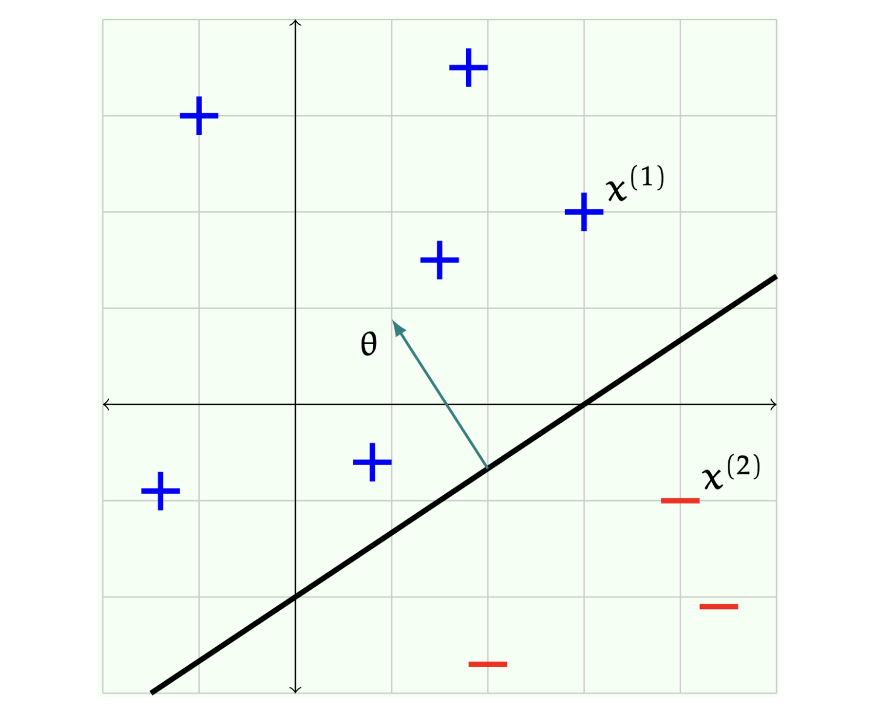

1. Introduction: Classification
기계 학습(Machine Learning)에서 가장 기본적이면서도 중요한 문제는 분류(Classification)입니다. 그중에서도 두 개의 클래스로 데이터를 구분하는 이진 분류(Binary Classification)는 다양한 알고리즘의 기초가 됩니다.
이번 포스트에서는 분류 문제의 수학적 정의부터 시작하여, 가장 직관적인 모델인 선형 분류기(Linear Classifier)의 작동 원리와 기하학적 의미를 살펴보고, 학습 알고리즘을 평가하는 방법론인 Cross-Validation까지 다룹니다.
1.1 The Classification Problem
- 이진 분류기는 데이터 공간 \(\mathbb{R}^d\)에 존재하는 입력 벡터 \(x\)를 \(\{-1, +1\}\)의 레이블로 매핑하는 함수입니다. \[
h: \mathbb{R}^d \rightarrow \{-1, +1\}
\]
- 여기서 \(h\)는 가설(Hypothesis) 또는 분류기(Classifier)를 의미합니다.
- 실제 문제에서는 원본 데이터(Raw Data)를 그대로 사용하기보다, 특징 추출(Feature Extraction) 과정을 거친 특징 벡터(Feature Vector)를 사용하는 경우가 많습니다. 이를 함수 \(\varphi\)로 표현하면 다음과 같습니다.
\[ x = \varphi(\text{raw input}) \in \mathbb{R}^d \]
- 우리의 목표는 입력 \(x\)가 주어졌을 때, 적절한 레이블 \(y\)를 출력하는 함수 \(h\)를 찾는 것입니다.
1.2 Supervised Learning Setup
- 지도 학습(Supervised Learning) 환경에서는 입력과 정답이 쌍으로 이루어진 학습 데이터셋(Training Dataset) \(\mathcal{D}_n\)이 주어집니다. \[
\mathcal{D}_n = \{(x^{(1)}, y^{(1)}), ..., (x^{(n)}, y^{(n)})\}
\]
- \(x^{(i)}\): \(d \times 1\) 차원의 열 벡터(Column Vector)
- \(y^{(i)}\): \(\{-1, +1\}\) 중 하나의 값을 가지는 레이블
- 이 데이터의 의미는 명확합니다. 우리가 학습한 가설 \(h\)에 입력 \(x^{(i)}\)를 넣었을 때, 실제 레이블인 \(y^{(i)}\)가 출력되기를 기대하는 것입니다.
2. Generalization & Error Metrics
분류기가 학습 데이터에 대해서만 잘 작동하는 것은 큰 의미가 없습니다. 우리가 진정으로 원하는 것은 새로운 데이터(New Data)에 대해 잘 작동하는 능력, 즉 일반화(Generalization) 능력입니다.
이를 위해 우리는 학습 데이터와 테스트 데이터가 동일한 확률 분포에서 독립적으로 추출(i.i.d.) 되었다고 가정합니다.
2.1 Training Error vs. Test Error
모델의 성능을 정량화하기 위해 0-1 Loss 기반의 에러를 정의합니다.
Training Error (학습 오차, \(\mathcal{E}_n\)):
- 학습 데이터셋 내에서 분류기가 틀린 비율입니다. \[ \mathcal{E}_n(h) = \frac{1}{n} \sum_{i=1}^{n} \mathbb{I}(h(x^{(i)}) \neq y^{(i)}) \]
- 여기서 \(\mathbb{I}(\cdot)\)는 조건이 참이면 1, 거짓이면 0을 반환하는 지시 함수(Indicator Function)입니다.
Test Error (테스트 오차, \(\mathcal{E}\)):
- 학습에 사용되지 않은 새로운 데이터 \(n'\)개에 대한 오차입니다. 일반화 성능을 측정하는 지표가 됩니다. \[ \mathcal{E}(h) = \frac{1}{n'} \sum_{i=n+1}^{n+n'} \mathbb{I}(h(x^{(i)}) \neq y^{(i)}) \]
2.2 Hypothesis Class (\(\mathcal{H}\))
- 학습 알고리즘은 가능한 모든 분류기의 집합인 가설 공간(Hypothesis Class, \(\mathcal{H}\)) 중에서 최적의 \(h\)를 찾아내는 과정입니다.
\[ \mathcal{D}_n \xrightarrow{\text{Learning Algorithm}(\mathcal{H})} h \in \mathcal{H} \]
- \(\mathcal{H}\)의 선택은 테스트 에러에 큰 영향을 미칩니다. \(\mathcal{H}\)가 너무 복잡하면 과적합(Overfitting)의 위험이 있고, 너무 단순하면 데이터의 패턴을 충분히 학습하지 못할 수 있습니다. 따라서 일반화 성능을 높이기 위해 \(\mathcal{H}\)의 표현력(Expressiveness)을 적절히 제한하는 것이 중요합니다.
3. Linear Classifiers
- 선형 분류기는 데이터 공간을 초평면(Hyperplane)으로 나누어 클래스를 구분하는 모델입니다.
3.1 Definition
선형 분류기는 파라미터 벡터 \(\theta \in \mathbb{R}^d\)와 스칼라 오프셋(offset) \(\theta_0 \in \mathbb{R}\)에 의해 정의됩니다. 즉, 가설 공간 \(\mathcal{H}\)는 \(\mathbb{R}^{d+1}\) 공간의 벡터들로 구성됩니다.
분류 함수는 다음과 같이 정의됩니다. \[ h(x; \theta, \theta_0) = \text{sign}(\theta^\top x + \theta_0) = \begin{cases} +1 & \text{if } \theta^\top x + \theta_0 > 0 \\ -1 & \text{otherwise} \end{cases} \]
- \(\theta^\top x\): 두 벡터의 내적(Dot Product)으로, 결과는 스칼라입니다.
- \(\text{sign}(\cdot)\): 입력이 양수이면 +1, 그렇지 않으면(0 포함) -1을 반환합니다.
3.2 Geometric Interpretation
기하학적으로 \(\theta\)와 \(\theta_0\)는 \(d\)차원 공간 \(\mathbb{R}^d\)를 두 개의 반공간(Half-space)으로 나누는 초평면(Hyperplane)을 결정합니다.
Decision Boundary (결정 경계): \(\theta^\top x + \theta_0 = 0\) 인 지점들의 집합입니다.
Normal Vector (\(\theta\)): 초평면에 수직인 법선 벡터입니다. \(\theta\)가 가리키는 방향에 있는 반공간은 Positive (+)로, 반대편은 Negative (-)로 분류됩니다.
Offset (\(\theta_0\)): 초평면이 원점에서 얼마나 떨어져 있는지를 결정합니다.

3.3 Example Calculation
- 구체적인 예시를 통해 계산 과정을 살펴보겠습니다.
- 파라미터: \(\theta = \begin{bmatrix} -1 \\ 1.5 \end{bmatrix}, \quad \theta_0 = 3\)
- 데이터 포인트 1: \(x^{(1)} = \begin{bmatrix} 3 \\ 2 \end{bmatrix}\)
- 데이터 포인트 2: \(x^{(2)} = \begin{bmatrix} 4 \\ -1 \end{bmatrix}\)
- Case 1: \(x^{(1)}\) 분류
\[ \begin{aligned} h(x^{(1)}) &= \text{sign}\left( \begin{bmatrix} -1 & 1.5 \end{bmatrix} \begin{bmatrix} 3 \\ 2 \end{bmatrix} + 3 \right) \\ &= \text{sign}((-1 \times 3) + (1.5 \times 2) + 3) \\ &= \text{sign}(-3 + 3 + 3) \\ &= \text{sign}(3) = +1 \end{aligned} \]
- Case 2: \(x^{(2)}\) 분류
\[ \begin{aligned} h(x^{(2)}) &= \text{sign}\left( \begin{bmatrix} -1 & 1.5 \end{bmatrix} \begin{bmatrix} 4 \\ -1 \end{bmatrix} + 3 \right) \\ &= \text{sign}((-1 \times 4) + (1.5 \times -1) + 3) \\ &= \text{sign}(-4 - 1.5 + 3) \\ &= \text{sign}(-2.5) = -1 \end{aligned} \]
- 위 계산을 통해 \(x^{(1)}\)은 양성 클래스, \(x^{(2)}\)는 음성 클래스로 분류됨을 확인할 수 있습니다.
Think Deeper:
- 법선 벡터 찾기: 결정 경계에 수직인 벡터는 무엇인가? \(\rightarrow\) 바로 \(\theta\) 입니다.
- 분류 반전시키기: 결정 경계(직선)의 위치는 그대로 두고, 모든 (+) 포인트를 (-)로, (-) 포인트를 (+)로 분류하려면 어떻게 해야 할까요?
- \(\theta\)와 \(\theta_0\)의 부호를 모두 반대로 바꾸면 됩니다 (\(-\theta, -\theta_0\)).
- 부등호의 방향이 반대가 되어 \(\text{sign}\) 함수의 결과가 역전되기 때문입니다.
4. Learning Algorithms
- 그렇다면 최적의 \(\theta\)와 \(\theta_0\)는 어떻게 찾을 수 있을까요? 가장 단순한 형태의 알고리즘부터 살펴보겠습니다.
4.1 Algorithm 1: Random Linear Classifier
매우 단순한 접근법은 무작위로 여러 개의 가설을 생성한 뒤, 학습 데이터에서의 에러(Training Error)가 가장 낮은 것을 선택하는 것입니다.
Algorithm:
Random-Linear-Classifier(\(\mathcal{D}_n, k, d\))- Loop
jfrom 1 tok:
- \(\mathbb{R}^d\)와 \(\mathbb{R}\)에서 무작위로 파라미터 \((\theta^{(j)}, \theta_0^{(j)})\)를 샘플링합니다.
- Loop
- 각 \(j\)에 대해 학습 에러 \(\mathcal{E}_n(\theta^{(j)}, \theta_0^{(j)})\)를 계산합니다.
- 학습 에러를 최소화하는 인덱스 \(j^*\)를 찾습니다: \[j^* = \arg \min_{j \in \{1, ..., k\}} \mathcal{E}_n(\theta^{(j)}, \theta_0^{(j)})\]
- 최적의 파라미터 \((\theta^{(j^*)}, \theta_0^{(j^*)})\)를 반환합니다.
Study Question: \(k\)가 증가하면 학습 에러 \(\mathcal{E}_n\)은 어떻게 될까요? 일반적으로 \(k\)가 커질수록 더 많은 가설을 탐색하므로, 운 좋게 좋은 분류기를 찾을 확률이 높아져 학습 에러는 감소하는 경향이 있습니다. 하지만 이것이 테스트 에러(일반화 성능)의 감소를 보장하지는 않습니다.
5. Evaluating Learning Algorithms
- 학습된 가설 \(h\)의 성능을 평가할 때는 여러 변동성(Variability) 요인을 고려해야 합니다.
- 어떤 학습 데이터 \(\mathcal{D}_n\)이 선택되었는가?
- 어떤 테스트 데이터가 선택되었는가?
- 알고리즘 내부의 무작위성(예: Random Initialization)
- 따라서 단 한 번의 학습과 테스트로 알고리즘을 평가하는 것은 위험합니다.
5.1 Algorithm 2: Cross-Validation (교차 검증)
데이터가 제한적인 상황에서 데이터를 재사용하면서도 신뢰성 있게 알고리즘을 평가하는 방법으로 K-Fold Cross-Validation이 있습니다. (여기서 \(k\)는 앞선 알고리즘의 반복 횟수와는 다른 의미입니다.)
Algorithm:
Cross-Validate(\(\mathcal{D}, k\))- 전체 데이터 \(\mathcal{D}\)를 대략 같은 크기를 가진 \(k\)개의 조각(Chunk) \(\mathcal{D}_1, \mathcal{D}_2, ..., \mathcal{D}_k\)로 나눕니다.
- Loop
ifrom 1 tok:
- \(\mathcal{D}_i\)를 제외한 나머지 데이터 \(\mathcal{D} \setminus \mathcal{D}_i\)로 가설 \(h_i\)를 학습합니다.
- 제외해둔 \(\mathcal{D}_i\)를 테스트 셋으로 사용하여 에러 \(\mathcal{E}_i(h_i)\)를 계산합니다.
- Loop
- 계산된 \(k\)개의 에러의 평균을 반환합니다. \[\text{CV Error} = \frac{1}{k} \sum_{i=1}^{k} \mathcal{E}_i(h_i)\]
핵심 통찰 (Key Insight): Cross-Validation은 특정한 하나의 가설 \(h\)를 평가하는 것이 아닙니다. 이 과정은 가설을 만들어내는 “학습 알고리즘” 자체의 성능을 평가하는 것입니다. 최종적으로 우리가 사용할 모델은 전체 데이터를 사용하여 다시 학습시킨 결과물이 됩니다.